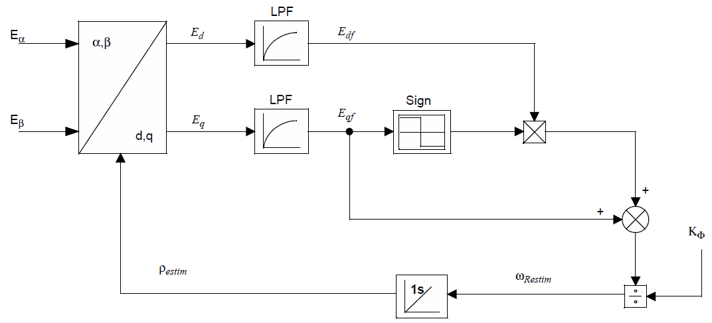

5.4.2. AN1292 锁相环（PLL）¶
5.4.2.1. 概述¶
用于估计位置和速度的无传感器估计器本质上与应用笔记 AN1292。

图 5.55 AN1292 锁相环方框图¶
静止坐标系电压 \(V_{\alpha\beta}\) 和电流 \(I_{\alpha\beta}\) 用于估计反电动势分量 \(E_{\alpha\beta}\) 使用方程的离散时间近似
(5.24)¶\[E_{\alpha\beta} = V_{\alpha\beta} - R_sI_{\alpha\beta} - L_s\tfrac{d}{dt}I_{\alpha\beta}\]
反馈环如 图 5.55 所示，用于旋转 \(E_{\alpha\beta}\) 到同步（dq）坐标系以产生误差信号并更新电气角度 \(\theta_e\) （而不是 \(\rho_{\mathrm{estim}}\) 图中所示）用于旋转，其中
(5.25)¶\[\theta_e = \rho_{\mathrm{estim}} + \rho_{\mathrm{ofs}}\]
和 \(\rho_{\mathrm{ofs}}\) （motor.estimator.pll.rhoOffset 在固件中）是一个默认为零的参数，但可以通过 实时诊断工具。